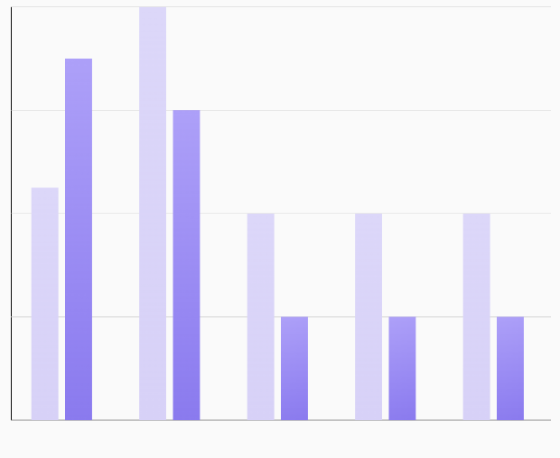

ComparisonBarChart

🍸Overview
A chart that displays a grouped bar chart for comparing multiple values across common categories (e.g., monthly comparisons for different products, users, or metrics). Each group represents a category and contains multiple bars to compare distinct values within that group.
🧱 Declaration
@Composable
fun ComparisonBarChart(
data: () -> List<ComparisonBarData>,
modifier: Modifier = Modifier,
labelConfig: LabelConfig = LabelConfig.default(),
comparisonBarChartConfig: ComparisonBarChartConfig = ComparisonBarChartConfig.default(),
onGroupClicked: (Int) -> Unit = {}
)
🔧 Parameters
| Parameter | Type | Description |
|---|---|---|
data |
() -> List<ComparisonBarData> |
A lambda that returns a list of ComparisonBarData items. Each item defines a group with one or more bars for comparison. |
modifier |
Modifier |
Compose Modifier to control layout, padding, size, or drawing behavior. |
labelConfig |
LabelConfig |
Configuration for the X-axis and Y-axis labels, including font size, color, alignment, etc. |
comparisonBarChartConfig |
ComparisonBarChartConfig |
Defines visual properties and behavior of the grouped bar chart like bar spacing, animation, alignment, max value, etc. |
onGroupClicked |
(Int) -> Unit |
Callback triggered when a group (set of bars) is clicked. Receives the index of the clicked group. Useful for interactivity or detail views. |
📊 ComparisonBarData Model
A data class representing a single group in a comparison bar chart. Each group corresponds to a label (e.g., a category or time period) and contains multiple bars with individual values and colors for comparison within that group.
data class ComparisonBarData(
val label: String,
val bars: List<Float>,
val colors: List<ChartColor>
)
| Property | Type | Description |
|---|---|---|
label |
String |
The label representing the group on the X-axis. Common examples include month names, category names, or dates. |
bars |
List<Float> |
A list of Float values representing the height of each bar in the group. The number of values in this list determines how many bars are shown for the group. |
colors |
List<ChartColor> |
A list of ChartColor values that define the fill color for each corresponding bar in the bars list. Should match the size of bars for consistent rendering. |
💡 Example
val chartData = listOf(
ComparisonBarData(
label = "Jan",
bars = listOf(
BarData(yValue = 50f, xValue = "Product A", barColor = Color.Red.asSolidChartColor()),
BarData(yValue = 75f, xValue = "Product B", barColor = Color.Blue.asSolidChartColor())
)
),
ComparisonBarData(
label = "Feb",
bars = listOf(
BarData(yValue = 60f, xValue = "Product A", barColor = Color.Red.asSolidChartColor()),
BarData(yValue = 85f, xValue = "Product B", barColor = Color.Blue.asSolidChartColor())
)
)
)
ComparisonBarChart(
data = { chartData },
modifier = Modifier.fillMaxWidth(),
onGroupClicked = { index ->
}
)